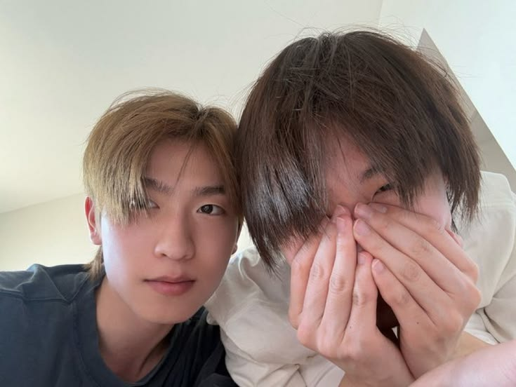
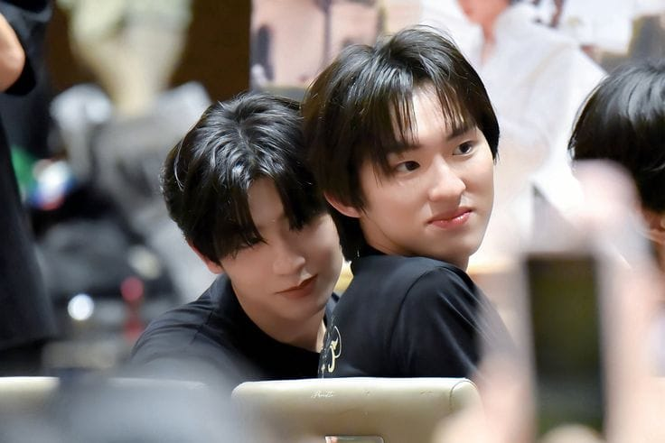
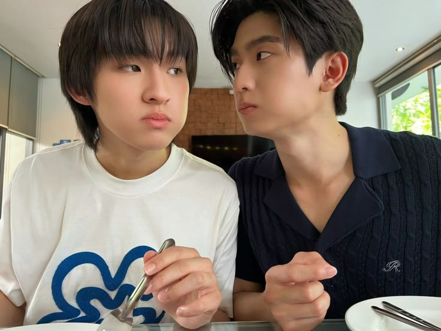

awalnya, mas gak pernah kepikiran kalau semuanya akan menjadi seperti ini. Saat pertama kali ketemu sama kamu, jujur mas gak datang dengan niat untuk mencari seseorang yang akan menetap di hidup mas. mas cuma mau main-main, menjalani semuanya tanpa terlalu banyak berpikir tentang perasaan dan tanpa pernah membayangkan bahwa suatu hari nanti mas akan begitu takut kehilangan seseorang.

mas mau minta maaf untuk semua kesalahan yang mas buat. mas tau mungkin kesalahan mas gak mudah untuk dimaafkan, mas mau minta maaf untuk semua janji yang mas ingkari, mas mau minta maaf untuk semua perkataan mas yang gak bisa mas laksanakan. banyak janji yang mas berikan untuk kamu, banyak harapan yang mas berikan untuk kamu, mas minta maaf.
sayang, terimakasih karena sudah hadir di hidup mas, terimakasih karena sudah menyayangi dan mencintai mas sepenuh hati kamu. mas tau, kata "terimakasih" aja gak cukup buat membalas semua perbuatan kamu untuk mas. tapi, satu hal yang harus kamu tau, mas bersyukur bisa ketemu orang sebaik kamu, orang yang mencintai mas dengan sepenuh hati.

mas mau minta maaf untuk semua kesalahan yang mas buat. mas tau mungkin kesalahan mas gak mudah untuk dimaafkan. mas mau minta maaf untuk semua janji yang mas ingkari, semua perkataan yang pernah mas ucapkan dan semua harapan yang pernah mas berikan untuk kamu.